Chúng ta đang đi đến một phần rất thú vị trong quá trình xây dựng microservice của mình, nơi mọi thứ thực sự được ghép lại với nhau. Cho đến lúc này, chúng ta đã xây dựng một mô hình vận hành, một thiết kế microservice, một nền tảng hạ tầng và hai microservice đang hoạt động. Bây giờ, chúng ta sẽ lấy tất cả những mảnh ghép đó và kết hợp chúng thành một bản triển khai thống nhất.
Trong chương này, chúng ta sẽ đi qua khá nhiều nội dung. Chúng ta sẽ xây dựng một môi trường hạ tầng mới có tên là staging. Tiếp theo, chúng ta sẽ bổ sung cho kho mã nguồn của mình một quy trình phân phối container. Khi container đã sẵn sàng, chúng ta sẽ triển khai một quy trình triển khai bằng công cụ GitOps Argo CD. Khi hoàn tất, chúng ta sẽ có một kiến trúc trông giống như Hình 10-1.
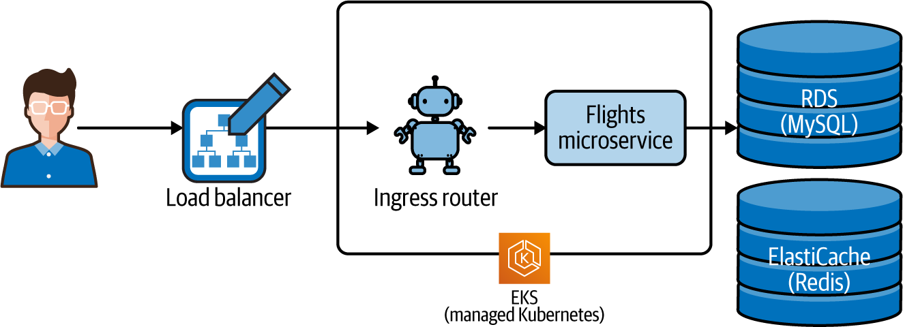
Do phạm vi nội dung cần bao quát, chúng ta sẽ chỉ triển khai microservice thông tin chuyến bay. Tuy nhiên, bạn cũng có thể sử dụng toàn bộ các cơ chế được mô tả ở đây để triển khai cả dịch vụ đặt chỗ.
Để làm cho mọi thứ hoạt động, chúng ta sẽ sử dụng ba repository GitHub khác nhau, mỗi repository có pipeline và tài nguyên riêng (như minh họa trong Hình 10-2). Một trong những lý do chúng ta làm như vậy là vì nó rất phù hợp với mô hình vận hành đã được xác định ở Chương 2 và trao cho từng nhóm của chúng ta trách nhiệm cũng như phạm vi làm việc riêng.
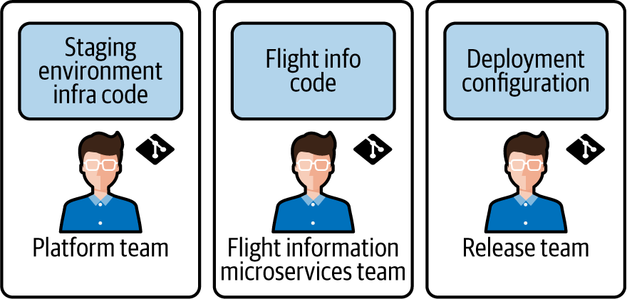
Có rất nhiều điều cần đề cập, vậy hãy bắt đầu với bước đầu tiên: cấp phát môi trường staging trên AWS.
Cho đến nay, chúng ta vẫn triển khai microservice vào môi trường phát triển cục bộ. Giờ đây, chúng ta sẽ lấy chính những dịch vụ đã được xây dựng và kiểm thử cục bộ đó để triển khai lên hạ tầng đám mây dựa trên AWS. Trong phần này, chúng ta sẽ xây dựng hạ tầng staging theo quy trình được minh họa trong Hình 10-3.
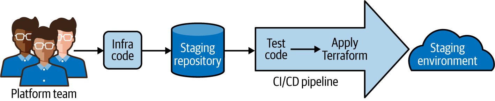
Chúng ta đã bắt đầu công việc này khi xây dựng môi trường sandbox trong Chương 7. Bây giờ, chúng ta cần cập nhật mã hạ tầng đó để phản ánh nhu cầu của các microservice thông tin chuyến bay và đặt chỗ chuyến bay. Chúng ta sẽ bổ sung ba thành phần mới vào mã Terraform để hỗ trợ các microservice của mình:
Một bộ điều khiển ingress và bộ định tuyến biên gửi request đến các microservice trong Kubernetes
Một instance cơ sở dữ liệu MySQL trên AWS dành cho dữ liệu của microservice flights
Một instance cơ sở dữ liệu Redis trên AWS dành cho dữ liệu của microservice reservations
Kiểu thay đổi không hề đơn giản này có thể tiềm ẩn rủi ro. Nhưng đây chính là lúc cách tiếp cận hạ tầng bất biến và hạ tầng dưới dạng mã (IaC) của chúng ta thực sự phát huy giá trị! Chúng ta biết chính xác môi trường hiện tại của mình được dựng như thế nào, vì toàn bộ đều nằm trong mã Terraform. Việc cần làm bây giờ chỉ là tạo module cho từng thành phần mới, cập nhật định nghĩa môi trường và chạy quá trình build thông qua pipeline CI/CD.
Trong Chương 7, chúng ta đã cùng nhau đi qua quy trình viết từng module Terraform. Nhưng vì phần đó đã được trình bày chi tiết, lần này chúng ta sẽ sử dụng các tài sản mã và cấu hình đã được viết sẵn cho bạn. Bạn chỉ cần tùy biến chúng một chút cho phù hợp với nhu cầu của mình.
Hãy bắt đầu bằng một chuyến tham quan ngắn qua các module mới mà chúng ta sẽ dùng để cấp phát những thành phần mới, trước hết là module cổng ingress.
Trong Chương 9, chúng ta đã sử dụng một bộ định tuyến biên tên là Traefik để định tuyến message tới các microservice chạy trong container. Chúng ta sẽ triển khai một kiến trúc tương tự trong hạ tầng dựa trên AWS. Có rất nhiều công cụ có thể dùng để thực hiện định tuyến ingress. Ví dụ, nhiều người thực hành sử dụng bộ điều khiển ingress Nginx. Traefik cũng là một lựa chọn tốt: vì chúng ta đã bắt đầu dùng nó trong giai đoạn phát triển, nên chúng ta quyết định triển khai nó làm bộ điều khiển trong môi trường AWS luôn.
Để tiết kiệm thời gian, chúng tôi đã viết sẵn một module Terraform sẽ cài đặt bộ điều khiển ingress Traefik vào môi trường. Chúng ta sẽ có thể dùng module này trong mã môi trường Terraform của mình theo cách tương tự như các module network, EKS và Argo CD đã dùng ở Chương 6. Mã cho module Traefik có tại trang GitHub này.
Chúng ta sẽ không có thời gian để triển khai một API “backend for frontend” (BFF) như một phần của bản build ví dụ. Tuy nhiên, cấu hình ingress mà chúng ta đang thiết lập rất phù hợp để được mở rộng cho mục đích đó trong tương lai. Ví dụ, bạn có thể cấp phát một AWS API Gateway đặt phía trước bộ điều khiển ingress để kết hợp nhiều service thành một API duy nhất. Thực tế, chúng ta đã triển khai Traefik bằng AWS Network Load Balancer, điều này giúp loại kết nối đó dễ hiện thực hơn.
Chúng ta sẽ có dịp dùng module ingress này ở mục “Fork Dự án Hạ tầng Staging” khi xây dựng môi trường staging. Còn bây giờ, hãy xem chúng ta sẽ hỗ trợ nhu cầu cơ sở dữ liệu của mình như thế nào.
Mỗi microservice của chúng ta sử dụng cơ sở dữ liệu khác nhau, vì vậy chúng ta sẽ cần cấp phát hai loại cơ sở dữ liệu khác nhau trong môi trường hạ tầng. Chúng ta sẽ cần cả MySQL lẫn Redis để đáp ứng nhu cầu của các nhóm microservice. Trong bản build này, chúng ta đã quyết định sử dụng các phiên bản được AWS quản lý của những sản phẩm cơ sở dữ liệu này. Bằng cách đó, nhóm platform của chúng ta có thể cung cấp hai loại cơ sở dữ liệu theo mô hình x-as-a-service cho các nhóm microservice cần dùng chúng.
Trong module cơ sở dữ liệu, chúng ta sẽ dùng dịch vụ AWS ElastiCache để cấp phát một kho dữ liệu Redis và AWS Relational Database (RDS) để cấp phát một instance MySQL. Chúng tôi đã viết sẵn một module thực hiện việc này, bạn có thể tìm thấy nó trong repository GitHub của cuốn sách. Module này cấp phát cả hai loại cơ sở dữ liệu, cũng như cấu hình mạng và các chính sách truy cập mà dịch vụ cơ sở dữ liệu cần để vận hành.
Khi module được áp dụng cho môi trường staging, chúng ta sẽ có cả Redis và một instance cơ sở dữ liệu MySQL đang chạy và sẵn sàng sử dụng. Việc còn lại lúc này chỉ là dùng các module đó trong một tệp mã Terraform và cấp phát một môi trường. Đó là nội dung chúng ta sẽ đề cập ở phần tiếp theo.
Môi trường staging mà chúng ta cần để phát hành các microservice của mình sẽ rất giống với môi trường sandbox mà chúng ta đã tạo trong Chương 7. Chúng ta sẽ tiếp tục dùng cùng các phương pháp và nguyên tắc đã áp dụng trước đó. Chúng ta sẽ dùng Terraform để định nghĩa môi trường bằng mã, và sẽ sử dụng các module mà chúng ta đã viết cho network, cụm Kubernetes và Argo CD. Chúng ta sẽ bổ sung cho các module đó bằng các module cơ sở dữ liệu mới và bộ điều khiển ingress mà vừa mô tả. Cuối cùng, chúng ta sẽ dùng một pipeline GitHub Actions để cấp phát môi trường, đúng như cách đã làm với môi trường sandbox.
Chúng ta đã giải thích cách tạo một pipeline GitHub Actions trong Chương 6, và đã đi qua quy trình viết cũng như sử dụng mã Terraform trong Chương 7. Vì vậy không cần làm lại tất cả những điều đó. Thay vào đó, chúng ta sẽ sử dụng một dự án khung cho môi trường staging mà chúng tôi đã tạo sẵn cho bạn (xem Hình 10-4). Chúng ta sẽ cần thực hiện một vài thay đổi nhỏ trong mã để nó hoạt động trong môi trường AWS của bạn. Để làm được điều đó, chúng ta sẽ fork repository để bạn có bản sao riêng và có thể thay đổi tùy ý.
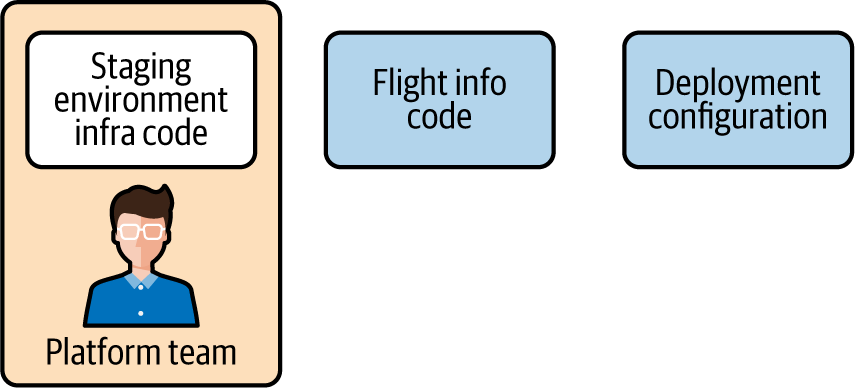
Trong GitHub, một fork cho phép bạn tạo một bản sao của dự án mã nguồn của người khác trong tài khoản của mình. Để fork repository môi trường staging, hãy làm theo các bước sau:
Mở trình duyệt và đăng nhập vào tài khoản GitHub của bạn.
Đi tới repository GitHub của cuốn sách.
Nhấp nút Fork ở góc trên bên phải của màn hình.
Bạn có thể muốn nhân bản repository này thay vì fork nó. Cách này sẽ cho phép bạn đổi chế độ truy cập của repository sang private thay vì public. Hướng dẫn về cách nhân bản repository GitHub có trong tài liệu GitHub về chủ đề này.
Khi thao tác hoàn tất, bạn sẽ có bản sao fork của riêng mình cho infra-staging-env. Tuy nhiên, nó vẫn chưa được cấu hình để sử dụng tài khoản hoặc tài nguyên AWS của bạn. Điều đầu tiên chúng ta cần cập nhật là workflow GitHub Actions.
Workflow CI/CD đã fork mà chúng ta vừa tạo sẽ không thể truy cập tài khoản AWS của bạn nếu không có thông tin xác thực. Vì vậy, chúng ta cần thêm thông tin xác thực quản lý truy cập AWS và một mật khẩu MySQL vào phần secrets của repository. Bạn nên đã có thông tin xác thực cho tài khoản operator AWS từ phần thiết lập pipeline mà chúng ta đã thực hiện trong Chương 6. Nếu bạn không còn giữ các khóa đó nữa, bạn có thể mở bảng điều khiển quản lý AWS trên trình duyệt và tạo một bộ thông tin xác thực mới cho người dùng operations của mình.
Khi đã có thông tin xác thực trong tay, hãy đi tới phần Settings của repository GitHub đã fork và chọn Secrets ở menu điều hướng bên trái. Thêm các secret trong Bảng 10-1 bằng cách nhấp nút New secret.
| Khóa | Giá trị |
|---|---|
|
Access key ID cho người dùng AWS |
|
Secret key cho người dùng |
|
microservices |
Hãy chắc chắn bạn nhập chính xác các tên khóa này như mô tả trong Bảng 10-1. Nếu không, pipeline sẽ không thể truy cập instance AWS của bạn và tạo tài nguyên. Hãy dùng giá trị microservices cho secret MYSQL_PASSWORD. Mật khẩu này sẽ được dùng khi chúng ta cấp phát cơ sở dữ liệu AWS RDS.
Khi chúng ta fork repository infra-staging-env, GitHub đã tạo một bản sao của workflow Actions định nghĩa pipeline CI/CD. Nhưng vì lý do bảo mật, GitHub không tự động bật tính năng GitHub Actions khi bạn fork một repository (xem Hình 10-5). Vì vậy, bạn sẽ cần khởi chạy nó bằng cách làm như sau:
Nhấp tab Actions trong bảng điều khiển quản lý của repository đã fork.
Nếu được yêu cầu, hãy bảo GitHub bật workflow mà chúng ta đã fork.
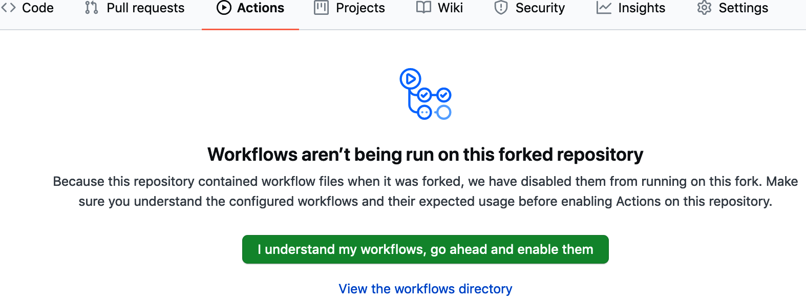
GitHub thay đổi trải nghiệm người dùng khá thường xuyên, vì vậy các bước và màn hình cụ thể mà bạn gặp có thể sẽ khác.
Pipeline hạ tầng đã fork của chúng ta hiện đã được kích hoạt và sẵn sàng chạy. Giờ chúng ta chỉ cần thực hiện thêm một vài điều chỉnh cho mã Terraform tạo ra môi trường staging.
Workflow staging mà chúng tôi đã xây dựng cho bạn sẽ tự động tạo một tệp kubeconfig như một phần của quá trình cấp phát. Tệp này chứa thông tin kết nối để bạn có thể kết nối tới cụm Kubernetes mà chúng ta sẽ tạo trên EKS. Vì repository mã này là public, tệp đó sẽ khả dụng với bất kỳ ai ghé thăm repository của bạn. Về lý thuyết, điều này không nên là vấn đề. Cụm EKS của chúng ta yêu cầu thông tin xác thực AWS để xác thực và kết nối. Điều đó có nghĩa là kể cả khi có tệp kubeconfig, kẻ tấn công vẫn không thể kết nối tới cụm của bạn trừ khi họ cũng có thông tin xác thực AWS của bạn.
Mã Terraform mà chúng tôi đã viết cho bạn sẽ cấp phát một môi trường staging. Nhưng nó sẽ không hoạt động đúng cho đến khi chúng ta đặt một số giá trị biến cục bộ dành riêng cho tài khoản AWS và môi trường của bạn. Để làm điều đó, chúng ta sẽ làm việc với các tệp trong môi trường cục bộ của bạn. Ngoài ra, bạn cũng cần tạo một bản clone của repository infra-staging-env đã fork. Phần đó chúng tôi để bạn tự thực hiện.
Nếu bạn chưa chắc cách clone repository của mình, hãy làm theo hướng dẫn dành cho hệ điều hành của bạn trong tài liệu GitHub.
Chúng ta sẽ chỉnh sửa tệp main.tf định nghĩa môi trường staging. Bạn sẽ cần thay đổi giá trị của một vài biến cục bộ mà chúng tôi đã định nghĩa trong Bảng 10-2.
| Tài nguyên | Tên thuộc tính | Mô tả |
|---|---|---|
|
|
Tên bucket S3 cho Terraform backend của bạn |
|
|
Định danh dùng cho dữ liệu backend của bạn trong S3 |
|
|
Region AWS của bạn |
|
|
Region AWS của bạn |
Các giá trị này sẽ giống hệt với cấu hình mà chúng ta đã tạo ở Chương 7, vì vậy nếu bạn còn giữ đoạn mã đó, bạn có thể copy và paste từ đó.
Để thực hiện các thay đổi này, hãy mở main.tf bằng trình soạn thảo văn bản bạn ưa thích và cập nhật nó bằng các giá trị phù hợp. Tất cả các giá trị bạn cần thay thế đều nằm trong các phần terraform và locals ở đầu tệp. Bạn cũng có thể tận dụng bước này để xem lại tệp
Terraform và hiểu rõ hơn nó làm gì. Khi hoàn tất, phần đầu của tệp sẽ trông tương tự như Ví dụ 10-1.
terraform {
backend "s3" {
bucket = "rm-terraform-backend"
key = "terraform-env"
region = "eu-west-2"
}
}
locals {
env_name = "staging"
aws_region = "eu-west-2"
k8s_cluster_name = "ms-cluster"
}
Mã Terraform staging của chúng ta hiện đã sẵn sàng để áp dụng. Nhưng nó sẽ không hoạt động nếu chúng ta thử sử dụng ngay. Đó là vì tài khoản operator AWS của chúng ta chưa có đủ quyền. Chúng ta đã thêm một số module cơ sở dữ liệu mới, nhưng tài khoản operator mà chúng ta đang dùng không được phép tạo hoặc làm việc với các tài nguyên AWS đó. Nếu chạy Terraform lúc này, chúng ta sẽ nhận được lỗi truy cập từ AWS.
Để giải quyết vấn đề đó, chúng ta cần cấp thêm một vài quyền cho người dùng operator AWS. Chúng ta sẽ làm điều này bằng cách tạo một IAM group mới cho công việc cơ sở dữ liệu. Khi group được thiết lập xong, chúng ta sẽ thêm tài khoản operator vào group để nó kế thừa các quyền đó.
Chạy lệnh AWS CLI sau để tạo một group mới tên là DB-Ops:
$ aws iam create-group --group-name DB-Ops
Tiếp theo, chúng ta có thể chạy lệnh sau để gắn các policy truy cập cho RDS và ElastiCache vào group:
$ aws iam attach-group-policy --group-name DB-Ops\ --policy-arn arn:aws:iam::aws:policy/AmazonRDSFullAccess &&\ aws iam attach-group-policy --group-name DB-Ops\ --policy-arn arn:aws:iam::aws:policy/AmazonElastiCacheFullAccess
Cuối cùng, dùng lệnh CLI sau để thêm tài khoản Ops của chúng ta vào group vừa tạo:
$ aws iam add-user-to-group --user-name ops-account --group-name DB-Ops
Khi các quyền đó đã được thiết lập, chúng ta gần như đã sẵn sàng. Nhưng trước khi commit, hãy làm một bài kiểm tra nhanh để bảo đảm mã hạ tầng đã cập nhật hoạt động đúng. Chạy các lệnh Terraform sau để định dạng và kiểm tra tính hợp lệ của mã đã cập nhật:
infra-staging-env$ terraform fmt [...] infra-staging-env$ terraform init [...] infra-staging-env$ terraform validate [...] infra-staging-env$ terraform plan [...]
Bây giờ chúng ta đã sẵn sàng commit mã hạ tầng và kích hoạt pipeline CI/CD. Hãy bắt đầu bằng cách commit mã Terraform đã cập nhật vào repository đã fork của bạn:
$ git add . $ git commit -m "Staging environment with databases" $ git push origin
Nếu bạn còn nhớ trong Chương 6, workflow của chúng ta sẽ được kích hoạt khi đẩy một thẻ phát hành bắt đầu bằng v. Hãy dùng các lệnh Git sau để tạo một thẻ v1.0 mới và đẩy nó lên repository đã fork của bạn:
$ git tag -a v1.0 -m "Initial staging environment build" $ git push origin v1.0
Với thao tác đó, quy trình cấp phát staging của bạn sẽ được khởi động. Bạn có thể kiểm tra trạng thái của lần chạy pipeline trong giao diện GitHub trên trình duyệt. Nếu job pipeline đã thành công, giờ bạn đã có một môi trường staging với một cụm Kubernetes cùng các cơ sở dữ liệu MySQL và Redis đang chạy và sẵn sàng sử dụng. Chúng ta sẽ cần cụm Kubernetes đó cho việc triển khai microservice. Vì vậy, bước tiếp theo sẽ là xác nhận rằng nó đang hoạt động.
Để giao tiếp với cụm Kubernetes staging, chúng ta sẽ cần thông tin cấu hình cho ứng dụng kubectl. Để lấy được thông tin đó, chúng ta sẽ dùng đúng quy trình đã sử dụng ở “Kiểm thử Môi trường”, tức là tải xuống một tệp cấu hình và cập nhật thiết lập môi trường cục bộ.
Hãy bảo đảm pipeline CI/CD đã hoàn tất thành công trước khi thử kết nối tới cụm Kubernetes.
Thiết lập môi trường client Kubernetes của bạn bằng cách tải xuống tệp kubeconfig do pipeline staging của GitHub Actions tạo ra. Sau đó đặt biến môi trường KUBECONFIG trỏ tới cấu hình mà bạn vừa tải xuống:
$ export KUBECONFIG=~/Downloads/kubeconfig
Khi môi trường đã được thiết lập, hãy chạy kubectl get svc --all-namespaces để xác nhận cụm staging đang hoạt động và các đối tượng Kubernetes đã được triển khai. Bạn sẽ thấy kết quả tương tự như Ví dụ 10-2.
$ kubectl get svc --all-namespaces NAMESPACE NAME TYPE CLUSTER-IP argocd msur-argocd-application-controller ClusterIP 172.20.133.240 argocd msur-argocd-dex-server ClusterIP 172.20.74.68 default ms-ingress-nginx-ingress LoadBalancer 172.20.239.114 [... lots more services ...]
Trong kết quả, bạn sẽ thấy danh sách tất cả các Kubernetes service mà chúng ta đã triển khai. Danh sách đó phải bao gồm các service cho ứng dụng Argo CD và service ingress Nginx. Điều đó có nghĩa là cụm của chúng ta đang chạy và các service cần thiết đã được cấp phát thành công.
Bước cuối cùng chúng ta cần thực hiện là thiết lập một secret của Kubernetes. Khi microservice thông tin chuyến bay kết nối tới MySQL, nó sẽ cần một mật khẩu. Để tránh lưu mật khẩu đó dưới dạng văn bản thuần, chúng ta sẽ lưu nó trong một đối tượng Kubernetes đặc biệt giúp ẩn nó khỏi những người xem không được phép.
Chạy lệnh sau để tạo và điền dữ liệu cho secret Kubernetes chứa mật khẩu MySQL:
$ kubectl create secret generic \ mysql --from-literal=password=microservices -n microservices
Các chức năng secret dựng sẵn của Kubernetes khá hữu ích, nhưng chúng tôi khuyến nghị bạn dùng một giải pháp giàu tính năng hơn cho triển khai thực tế. Có rất nhiều lựa chọn trong lĩnh vực này, bao gồm cả HashiCorp Vault.
Giờ đây, chúng ta đã có một môi trường staging với hạ tầng phù hợp với nhu cầu của các microservice đã phát triển. Bước tiếp theo sẽ là xuất bản các microservice đó dưới dạng container để có thể triển khai chúng vào môi trường.
Trong Chương 9, chúng ta đã dùng make để kiểm thử, build và chạy microservice cục bộ trong môi trường phát triển. Nhưng để build và triển khai các service của mình vào testing, staging và xa hơn nữa, chúng ta sẽ muốn có một quy trình tự động và lặp lại được hơn.
Chúng tôi đã xây dựng sẵn một phiên bản container hóa của microservice flights để bạn sử dụng. Vì vậy, nếu bạn không quan tâm đến việc tự xây dựng workflow triển khai Docker Hub, bạn có thể bỏ qua đến phần “Triển khai Container Dịch vụ Flights”.
Việc dùng tự động hóa và các kỹ thuật DevOps để build service sẽ cải thiện tính dự đoán được, chất lượng và tốc độ triển khai microservice của chúng ta. Đây cũng chính là nguyên lý mà chúng ta đã áp dụng cho phần build hạ tầng. Trong phần này, chúng ta sẽ xây dựng một pipeline CI/CD để build và xuất bản microservice flights lên một container registry, như trong Hình 10-6.
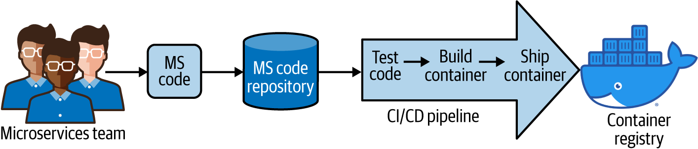
Hãy bắt đầu bằng cách tìm hiểu Docker Hub, container registry mà chúng ta sẽ dùng để lưu trữ container microservice.
Trong Chương 9, quy trình build dựa trên make của chúng ta đã dùng cả docker-compose lẫn docker để tạo ra container phục vụ kiểm thử và phát hành. Để đưa các container đó vào môi trường staging, chúng ta cần một cách để di chuyển chúng, hay nói cách khác là vận chuyển chúng sang đó. Container khá giống với ứng dụng nhị phân, vì vậy chúng ta hoàn toàn có thể chỉ cần tải chúng lên filesystem của môi trường đích. Nhưng điều này sẽ trở nên lộn xộn khi số lượng container cần quản lý tăng lên.
Thay vào đó, chúng ta sẽ đưa các container của mình vào một container registry. Registry là một hệ thống phần mềm lưu trữ container. Một registry tốt giúp container an toàn, đồng thời khiến chúng dễ được khám phá, cập nhật và thay đổi. Docker thậm chí còn định nghĩa một API cho các thao tác với registry và Docker engine có hỗ trợ dựng sẵn cho API đó.
Có rất nhiều lựa chọn lưu trữ registry hỗ trợ Docker registry API. Tất cả các nhà cung cấp đám mây lớn đều có thể lưu trữ cho bạn một registry riêng tư, an toàn. Bạn cũng có thể tự vận hành máy chủ registry bằng triển khai mã nguồn mở của Docker. Trong cuốn sách này, chúng ta sẽ dùng registry công khai do Docker lưu trữ có tên là Docker Hub. Chúng ta đã chọn Docker Hub vì nó miễn phí, phổ biến và tích hợp tốt với GitHub Actions.
Thiết lập một registry Docker Hub mới khá đơn giản. Tất cả những gì bạn cần làm là đăng nhập vào Docker Hub và tạo một registry. Bạn có thể tạo một repository cho ví dụ ứng dụng flights của chúng ta bằng cách làm theo các bước sau:
Đi tới trang chủ Docker Hub trên trình duyệt.
Đăng nhập vào Docker Hub.
Nhấp nút Create Repository.
Đặt tên repository là “flights.”
Nhấp nút Create.
Để sử dụng Docker Hub, bạn sẽ cần có một tài khoản Docker. Nếu bạn đã cài Docker khi thiết lập môi trường phát triển, bạn sẽ có Docker ID rồi. Nếu chưa có ID, hãy truy cập https://hub.docker.com và tạo một tài khoản.
Nếu gặp vấn đề trong quá trình này, hãy truy cập trang tài liệu Docker. Khi đã có tài khoản Docker và repository container, chúng ta đã sẵn sàng build và đẩy container vào đó bằng một pipeline CI/CD.
Cho đến nay, chúng ta vẫn dùng GitHub Actions làm công cụ pipeline cho toàn bộ công việc cấp phát dựa trên IaC. Nó hoạt động đủ tốt cho nhu cầu của chúng ta, vì vậy để giữ sự nhất quán, chúng ta sẽ tiếp tục dùng Actions làm pipeline cho các bản build container của microservice. Một lợi ích nữa là chúng ta có thể tận dụng các action do Docker phát hành để việc tích hợp với Docker Hub trở nên dễ dàng hơn.
Trong Chương 9, chúng ta đã đi qua quy trình tạo microservice thông tin chuyến bay. Nếu bạn đã làm theo các bước đó, bạn sẽ có một repository GitHub chứa mã nguồn và các makefile (xem Hình 10-7). Chúng ta sẽ tạo workflow GitHub Actions ngay trong repository này để pipeline CI có thể nằm ngay cạnh mã nguồn. Nếu bạn chưa có repository dịch vụ flights của riêng mình, bạn có thể tạo một bản fork từ repository ví dụ của cuốn sách.
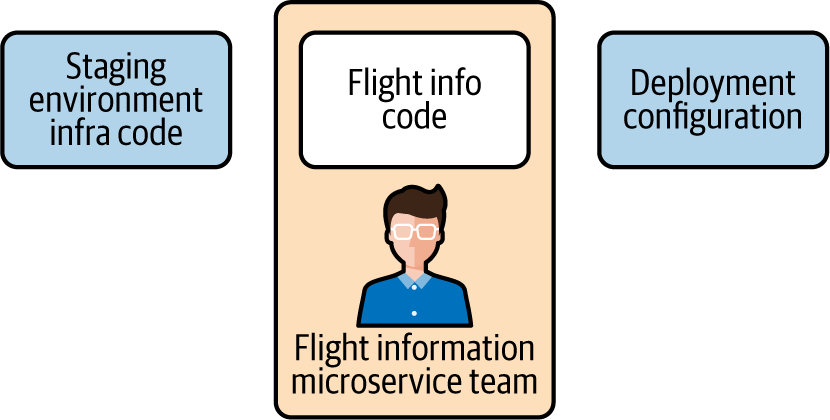
Giống như trước đây, chúng ta sẽ bắt đầu cấu hình pipeline bằng cách thêm thông tin xác thực vào repository GitHub.
Workflow của chúng ta sẽ cần giao tiếp với Docker Hub để xuất bản container. Vì vậy, chúng ta sẽ cần thêm thông tin truy cập Docker Hub của mình dưới dạng secret trong repository GitHub của flights. Cụ thể, chúng ta cần tạo và điền hai khóa secret như định nghĩa trong Bảng 10-3. Đây cũng chính là các thông tin xác thực mà bạn dùng để đăng nhập vào Docker Hub.
| Khóa | Mô tả |
|---|---|
|
Định danh tài khoản Docker của bạn |
|
Mật khẩu tài khoản Docker của bạn |
Chúng ta đã đi qua chi tiết về việc thiết lập secret vài lần rồi, nhưng để nhắc lại nhanh, bạn sẽ cần làm như sau:
Dùng trình duyệt, đi tới trang settings của repository ms-flights đã fork trong GitHub.
Chọn Secrets ở điều hướng bên trái.
Thêm secret bạn muốn định nghĩa bằng cách nhấp New Secret.
Bạn có thể để ý rằng chúng ta không thêm bất kỳ secret tài khoản AWS nào vào repository này. Đó là vì pipeline này sẽ không triển khai vào một instance AWS. Workflow này sẽ chỉ tập trung vào việc đẩy container vào Docker Hub registry, chứ không triển khai container vào môi trường staging của chúng ta.
Đây là một sự tách biệt hữu ích, vì chúng ta muốn container microservice của mình có tính di động và không phụ thuộc môi trường (nghĩa là chúng ta sẽ không thêm logic hay giá trị phụ thuộc môi trường vào bản build). Việc dùng cùng một container đã build cho tất cả các môi trường kiểm thử và phát hành sẽ giúp cải thiện độ tin cậy chung của hệ thống.
Giờ việc duy nhất còn lại là tạo workflow thực hiện công việc build, kiểm thử và vận chuyển container.
Nếu bạn đã fork repository ms-flights, bạn sẽ thấy rằng chúng tôi đã viết sẵn cho bạn một workflow GitHub Actions để build và phát hành container. Tất cả những gì bạn cần làm là bật workflow bằng cách vào tab Actions trong repository đã fork, nơi bạn sẽ được nhắc bật workflow. Nếu bạn tự xây dựng repository ms-flights của mình, bạn có thể sao chép mã workflow vào thư mục workflows của riêng bạn.
Workflow GitHub Actions mà chúng tôi định nghĩa sẽ được kích hoạt bởi một thẻ phát hành, và có các bước sau:
Chạy unit test trên mã nguồn
Build một phiên bản container hóa của microservice
Đẩy container lên Docker Hub registry
Chúng ta đã thêm thông tin xác thực Docker Hub vào repository, vì vậy workflow đã sẵn sàng để chạy. Việc duy nhất cần làm là đẩy một thẻ tên v1.0 vào phần phát hành để kích hoạt workflow CI/CD. Chúng ta đã làm điều này vài lần bằng dòng lệnh và bản sao cục bộ của repository. Nhưng để tiết kiệm thời gian, lần này chúng ta sẽ kích hoạt bản build bằng giao diện GitHub trên trình duyệt.
Trong trình duyệt, hãy vào tab Code của repository GitHub ms-flights đã fork. Ở phía bên phải màn hình, nhấp liên kết “Create a new release” trong phần Releases, như minh họa trong Hình 10-8.
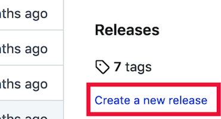
Tiếp theo, nhập giá trị v1.0 vào trường tag version, như minh họa trong Hình 10-9. Sau đó nhấp nút Publish Release ở cuối màn hình.
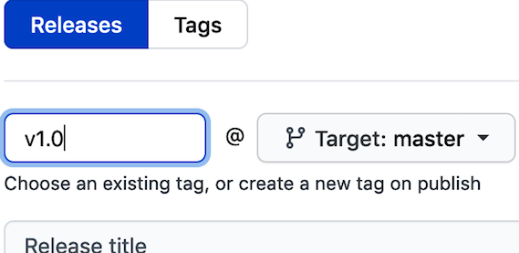
Việc publish một GitHub release với tag v1.0 cũng tương đương với việc đẩy tag bằng Git CLI. Kết quả cuối cùng là workflow GitHub Actions của chúng ta sẽ được kích hoạt. Bạn có thể vào tab Actions trong repository và xác nhận rằng một workflow tên CICD đã bắt đầu chạy. Quá trình này sẽ mất vài phút để chạy makefile và đóng gói container. Khi hoàn tất, container dịch vụ flights sẽ được đẩy lên và sẵn sàng sử dụng trong Docker Hub registry.
Để xác nhận container đã được phát hành, hãy truy cập tài khoản Docker Hub của bạn trên trình duyệt và xem danh sách repository. Bạn sẽ thấy một mục cho container flights vừa được đẩy lên. Nó sẽ trông giống như Hình 10-10.
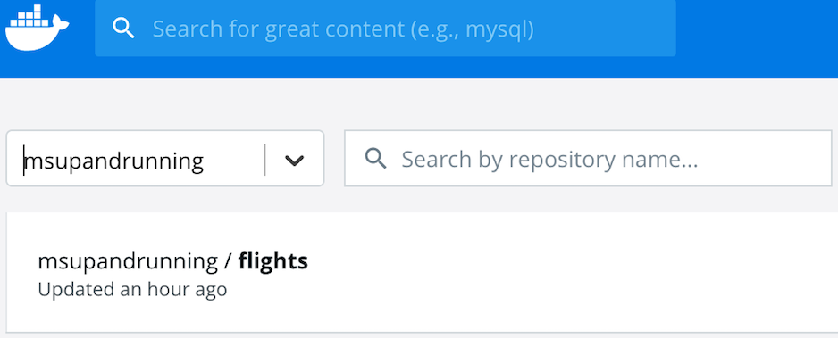
Giờ đây, chúng ta đã có một microservice ms-flights được container hóa sẵn sàng để triển khai vào môi trường staging. Khi các microservice đã được đẩy lên container registry, chúng ta có thể chuyển sang công việc triển khai container vào môi trường staging của mình.
Giờ đây, chúng ta đã có đủ mọi mảnh ghép để triển khai microservice flights. Chúng ta đã cấp phát một môi trường kiểm thử bằng pipeline hạ tầng, đồng thời đã tạo một image container hóa có thể triển khai cho service. Để hoàn tất việc triển khai, chúng ta sẽ dùng công cụ triển khai GitOps Argo CD mà mình đã cài trong stack hạ tầng ở Chương 7. Khi kết thúc phần này, chúng ta sẽ có một phiên bản đang chạy của microservice thông tin chuyến bay đã được triển khai và sẵn sàng sử dụng.
Để việc triển khai lặp lại được dễ hơn, chúng ta sẽ tạo một repository triển khai mới chứa các package Helm. Chúng ta lần đầu giới thiệu Helm ở “Thiết lập Argo CD”, khi xây dựng môi trường đầu tiên. Các package Helm mà chúng ta tạo sẽ mô tả cách một microservice nên được triển khai. Khi chúng sẵn sàng và được đẩy lên repository triển khai, Argo CD sẽ dùng chúng để triển khai container vào môi trường staging (Hình 10-11).
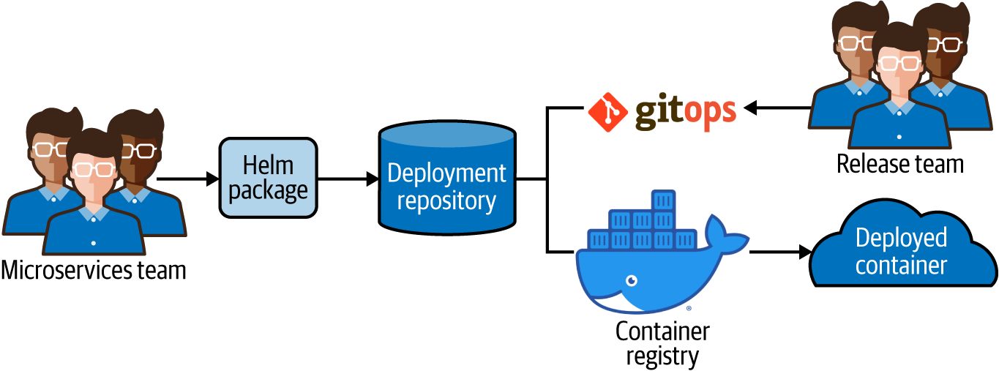
Toàn bộ công việc triển khai này sẽ diễn ra trong thế giới của Kubernetes, vì vậy hãy cùng có một hiểu biết nền tảng về điều đó nghĩa là gì.
Trong Chương 7, chúng ta đã giới thiệu Kubernetes và cài đặt nó để giúp vận hành và chạy các microservice dựa trên container. Kubernetes phổ biến vì nó xử lý được rất nhiều công việc cần làm để khởi động container, kiểm tra tình trạng sức khỏe của chúng, tìm kiếm service, nhân bản chúng và khởi động lại khi chúng gặp lỗi. Điều này mang lại cho hệ thống của chúng ta các đặc tính phục hồi và tự chữa lành, giúp đáp ứng những nguyên tắc chỉ đạo đã đề ra.
Tuy nhiên, một cụm Kubernetes vẫn cần được chỉ dẫn phải làm gì. Nó không thể triển khai microservice của bạn nếu không biết tìm image container ở đâu. Nó cũng không thể kiểm tra sức khỏe của microservice nếu không biết cần gọi API nào. Chúng ta cũng cần cung cấp cho Kubernetes một số giới hạn về số lượng instance container muốn tạo, cũng như cách các service đó được truy cập qua mạng.
Kubernetes nhìn thế giới như một tập hợp các đối tượng cấu hình mang tính khai báo. Để cấu hình một deployment microservice, bạn sẽ cần mô tả trạng thái tối ưu cho phiên bản đang chạy của container. Miễn là bạn mô tả đúng cấu hình chạy mong muốn, Kubernetes sẽ làm phần việc phía sau để đưa service của bạn vào hoạt động và giữ nó ở trạng thái đó.
Cách tiếp cận khai báo này tương tự như cách chúng ta dùng Terraform để mô tả tài nguyên hạ tầng. Trong Kubernetes, chúng ta sẽ định nghĩa một tập các đối tượng deployment đặc biệt bằng định dạng YAML. Sự thật là Kubernetes cực kỳ phức tạp, vì vậy chúng ta sẽ không thể đi sâu quá nhiều trong cuốn sách này. Nhưng sẽ rất hữu ích nếu điểm qua một vài đối tượng cốt lõi để hiểu cách microservice của mình sẽ được triển khai.
Có rất nhiều đối tượng cần tìm hiểu nếu bạn muốn thực sự hiểu cách vận hành một nền tảng Kubernetes. Nhưng cho mục đích của chúng ta, chỉ cần hiểu ở mức bề mặt năm đối tượng quan trọng để tạo một package triển khai đơn giản cho microservice flights: Pod, ReplicaSet, Deployment, Service và Ingress.
PodPod là một đối tượng mô tả đơn vị workload cơ bản. Nó định nghĩa một hoặc nhiều container Docker cần được khởi chạy và quản lý cùng nhau.
ReplicaSetReplicaSet cho Kubernetes biết cần khởi chạy và duy trì bao nhiêu instance của một Pod cụ thể cùng một lúc. Thông thường bạn sẽ không cần làm việc trực tiếp với ReplicaSet.
DeploymentController Deployment khai báo trạng thái mong muốn cho một Pod và các ReplicaSet liên quan. Đây là đối tượng chính bạn cần làm việc cùng để tạo một Kubernetes Deployment.
ServiceService định nghĩa cách các ứng dụng trong cụm Kubernetes có thể truy cập Pod này qua mạng, ngay cả khi có nhiều replica đang chạy cùng lúc. Đối tượng Service cho phép bạn định nghĩa một IP và cổng duy nhất để truy cập một nhóm Pod được nhân bản. Gần như lúc nào bạn cũng sẽ muốn định nghĩa một service cho một microservice deployment.
IngressĐối tượng Ingress cho phép bạn xác định đường vào tới Service của mình cho các ứng dụng bên ngoài cụm. Khai báo Ingress có thể bao gồm các quy tắc định tuyến để bộ điều khiển ingress định tuyến message tới đúng Service.
Để triển khai microservice của mình, chúng ta sẽ cần viết các cấu hình khai báo cho các đối tượng Ingress, Service và Deployment. Mặc dù chúng ta sẽ không viết các cấu hình cho Pod và ReplicaSet dưới dạng tệp riêng, chúng ta vẫn sẽ đưa chi tiết của chúng vào trong cấu hình đối tượng Deployment. Như đã đề cập trước đó, chúng ta sẽ dùng Helm để đóng gói tất cả các tệp này.
Một Kubernetes Deployment có thể đòi hỏi rất nhiều tương tác với cụm. Bạn cần thực hiện nhiều lệnh gọi tới Kubernetes API để cho nó biết bạn muốn triển khai container như thế nào, khi nào và ở đâu. Để giúp quản lý bớt phần phức tạp đó, chúng ta sẽ dùng công cụ đóng gói Helm.
Helm là một trình quản lý package cho Kubernetes. Nó giúp chúng ta có một cách dễ hơn để quản lý việc cài đặt và triển khai ứng dụng vào cụm Kubernetes. Trước đó trong cuốn sách, chúng ta đã dùng Helm để cài các package có sẵn như Argo CD. Bây giờ, chúng ta sẽ tự viết package Helm của mình để có thể triển khai microservice dễ dàng như vậy.
Để sử dụng Helm, trước tiên chúng ta cần hiểu ba khái niệm quan trọng là chart, template và values:
Chart là một bó tệp mô tả một tài nguyên hoặc một deployment trên Kubernetes. Chart là đơn vị triển khai cốt lõi trong Helm. Trước đó, chúng ta đã dùng các chart dựng sẵn khi triển khai các ứng dụng chạy trên Kubernetes như Argo CD.
Template là các tệp trong một chart mô tả một tài nguyên Kubernetes cụ thể. Chúng được gọi là template vì chứa các chỉ dẫn đặc biệt để Helm thay thế giá trị trong tệp. Ví dụ, bạn có thể tạo một template Service cho microservice và biến số cổng của Service thành một giá trị được tham số hóa.
Mỗi chart đều có một tệp values định nghĩa các giá trị sẽ được dùng để điền vào template. Tệp values là một cách hữu ích để quản lý khác biệt giữa các môi trường. Các giá trị cũng có thể được ghi đè khi cài chart bằng Helm.
Để tạo một package Helm cho flights, chúng ta sẽ cần tạo một Helm chart. Trong chart đó, chúng ta sẽ định nghĩa một bộ các tệp template khai báo cách dịch vụ flights nên được triển khai. Template của chúng ta sẽ có một số giá trị được tham số hóa để có thể dùng cho các loại môi trường khác nhau. Cuối cùng, chúng ta sẽ tạo một tệp values cho môi trường staging để điền vào các template.
Như đã mô tả trong “Triển khai Container Dịch vụ Flights”, chúng ta muốn các Helm chart của mình khả dụng để Argo CD truy xuất và sử dụng. Vì vậy, việc đầu tiên cần làm là tạo một repository triển khai microservice để lưu trữ và quản lý chúng.
Chúng ta sẽ giữ các Helm chart trong một “monorepo” duy nhất cho triển khai microservice. Cách này phù hợp với mô hình vận hành của chúng ta và cho phép nhóm release quản lý việc phát hành service theo cách toàn diện hơn. Các nhóm microservice vẫn có thể sở hữu Helm deployment chart của riêng mình và triển khai vào repository triển khai một cách độc lập (xem Hình 10-12).
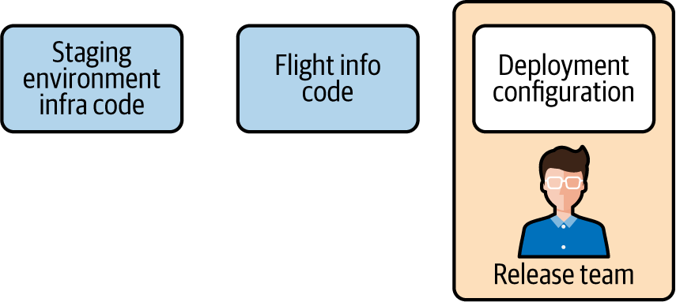
Để bắt đầu, hãy tạo một repository GitHub mới có tên là ms-deploy. Khi đã sẵn sàng, hãy tạo một bản clone cục bộ của repository đó trong môi trường phát triển của bạn. Chúng ta đã làm việc này vài lần rồi nên sẽ không đi lại toàn bộ chi tiết. Nếu bạn cần gợi nhớ quy trình tạo repository, tài liệu GitHub Quickstart là nơi phù hợp để bắt đầu.
Repository triển khai mà bạn đang tạo lúc này sẽ trở thành “source of truth” cho công cụ triển khai GitOps Argo CD mà chúng ta sẽ thiết lập sau trong chương này.
Bây giờ, bạn hẳn đã có một repository Git rỗng sẵn sàng để được điền bằng các gói Helm.
Cách dễ nhất để bắt đầu làm việc với các tệp Helm là dùng ứng dụng Helm CLI. CLI của Helm cho phép bạn tạo, cài đặt và kiểm tra Helm chart bằng Kubernetes API. Trong các ví dụ của mình, chúng ta sẽ dùng Helm phiên bản 3.2.4, bạn có thể tìm thấy nó tại trang GitHub này.
Nếu bạn chưa có Helm CLI, hãy tải xuống và cài đặt nó trên máy cục bộ ngay bây giờ. Khi đã xong, bạn sẽ sẵn sàng tạo Helm chart ms-flights.
Một trong những điểm hay của Helm CLI là nó cung cấp một chức năng tiện lợi để nhanh chóng bootstrap một chart mới. Để tạo chart khung của mình, hãy bảo đảm bạn đang ở thư mục gốc của repository ms-deploy và chạy lệnh sau:
ms-deploy $ helm create ms-flights
Khi hoàn tất, Helm sẽ tạo một package cơ bản chứa tệp chart.yaml mô tả chart của chúng ta, một tệp values.yaml có thể dùng để tùy biến giá trị chart, và một thư mục templates chứa cả một bộ template YAML Kubernetes cho một deployment cơ bản.
Điều tuyệt vời khi dùng Helm là phần lớn mã boilerplate mà chúng ta cần viết cho một deployment microservice cơ bản trên Kubernetes đã được xử lý sẵn. Chúng ta chỉ cần thực hiện một vài thay đổi nhỏ trong các template mà Helm đã tạo để có một package hoạt động được và có thể triển khai.
Cụ thể, chúng ta sẽ cần cập nhật tệp templates/deployment.yaml một chút để nó cụ thể hơn cho container mà chúng ta muốn triển khai.
Tệp /ms-flights/templates/deployment.yaml là một tệp mô tả đối tượng Kubernetes, khai báo trạng thái triển khai đích cho một Pod. Chúng ta đã nhắc đến việc các đối tượng Kubernetes có thể trở nên khá phức tạp. Tin tốt là tệp mà Helm đã tạo sẵn cho chúng ta có rất nhiều giá trị placeholder có thể giữ nguyên. Nhưng chúng ta vẫn cần thực hiện một vài thay đổi nhỏ để deployment này hoạt động cho microservice flights của mình.
Hãy bắt đầu bằng cách hiểu ở mức cơ bản một vài thuộc tính YAML quan trọng trong đối tượng deployment:
apiVersionMọi tệp YAML của Kubernetes đều chỉ rõ phiên bản của Kubernetes API mà tệp đó sử dụng.
kindThuộc tính này xác định loại đối tượng Kubernetes. Trong trường hợp này, đối tượng Kubernetes là Deployment.
specĐặc tả của đối tượng Kubernetes, đây là phần cốt lõi của bản mô tả.
spec.replicasChỉ rõ số lượng replica mà chúng ta muốn cho deployment này. Kubernetes sẽ tạo ReplicaSet cho chúng ta dựa trên giá trị này.
spec.templateThuộc tính template trong đặc tả Deployment là template cho Pod mà chúng ta dự định triển khai. Kubernetes dùng template này để cấp phát các pod trong deployment.
spec.template.containersThuộc tính containers của template Pod xác định image container và các giá trị môi trường mà Kubernetes nên dùng khi tạo một replica của Pod.
Đối với deployment đơn giản của chúng ta, chúng ta sẽ dùng các giá trị mặc định mà Helm đã tạo cho hầu hết thuộc tính của đối tượng Deployment. Nhưng chúng ta sẽ cần cập nhật spec.template.containers để nó hoạt động với container ms-flights mà mình đã build.
Hãy cập nhật YAML cho thuộc tính containers để nó chứa các giá trị env, ports, livenessProbe và readinessProbe như trong Ví dụ 10-3.
spec:[...]template:[...]spec:[...]containers:-name:{{.Chart.Name}}[...]imagePullPolicy:{{.Values.image.pullPolicy}}env:-name:MYSQL_HOSTvalue:{{.Values.MYSQL_HOST | quote}}-name:MYSQL_USERvalue:{{.Values.MYSQL_USER | quote}}-name:MYSQL_PASSWORDvalueFrom:secretKeyRef:name:{{.Values.MYSQLSecretName}}key:{{.Values.MYSQLSecretKey}}-name:MYSQL_DATABASEvalue:{{.Values.MYSQL_DATABASE | quote}}ports:-name:httpcontainerPort:5501protocol:TCPlivenessProbe:httpGet:path:/pingport:httpreadinessProbe:httpGet:path:/healthport:http[...]
Một ví dụ hoàn chỉnh về Helm chart ms-flights có tại trang GitHub của cuốn sách.
Bản cập nhật mà chúng ta thực hiện cho phần containers bao gồm những nội dung sau:
Một tập biến môi trường được tham số hóa để kết nối tới cơ sở dữ liệu MySQL (chúng ta sẽ đặt giá trị thực tế sau)
Cổng TCP mà microservice flights sẽ bind vào và container của chúng ta expose
Các endpoint liveness và readiness mà Kubernetes sẽ dùng để kiểm tra xem Pod còn sống hay không (như đã định nghĩa trong Chương 9)
Đó là tất cả những gì chúng ta cần tùy biến để các template Helm được tạo sẵn hoạt động cho mình. Với template deployment đã tạo, chúng ta đã có một đối tượng Kubernetes Deployment được tham số hóa. Giờ chúng ta chỉ cần định nghĩa một số giá trị để sử dụng trong template.
Một trong những điều hay khi sử dụng một package Helm cho deployment là chúng ta có thể tái sử dụng cùng một template cho nhiều môi trường khác nhau chỉ bằng cách thay đổi một vài giá trị. Một cách để đặt các giá trị đó là thông qua Helm client tại thời điểm cài đặt. Trước đó trong cuốn sách, chúng ta đã làm điều này khi cài package Helm cho Argo CD.
Một lựa chọn khác là tạo một tệp tuần tự hóa toàn bộ các giá trị bạn muốn sử dụng vào một nơi duy nhất. Đây là cách tiếp cận mà chúng ta sẽ dùng cho package triển khai của mình. Nó mang lại lợi thế là có thể quản lý các tệp giá trị triển khai như mã. Chúng ta sẽ dùng chính tệp values.yaml mà Helm đã tạo sẵn cho mình. Bạn sẽ tìm thấy tệp đó ở thư mục gốc của chart ms-flights.
Đầu tiên, chúng ta cần cập nhật thông tin cho Docker image. Mở tệp values.yaml trong trình soạn thảo văn bản bạn ưa thích và tìm khóa image ở phần đầu tệp YAML. Cập nhật image bằng các chi tiết trong Ví dụ 10-4.
replicaCount: 1 image: repository: "msupandrunning/flights" pullPolicy: IfNotPresent tag: "v1.0"
Ví dụ này sử dụng container mà chúng tôi đã build sẵn cho bạn. Nếu bạn muốn dùng container của riêng mình, bạn sẽ cần thay đổi giá trị của repository và tag.
Tiếp theo, chúng ta sẽ thêm các giá trị kết nối MySQL để microservice có thể kết nối tới các dịch vụ cơ sở dữ liệu của môi trường staging. Hãy thêm YAML sau vào tệp values của bạn (bạn có thể thêm ngay sau thuộc tính tag):
image: [..] MYSQL_HOST: rds.staging.msur-vpc.com MYSQL_USER: microservices MYSQL_DATABASE: microservices_db MYSQLSecretName: mysql MYSQLSecretKey: password
Cuối cùng, hãy tìm thuộc tính ingress gần cuối tệp YAML và cập nhật nó bằng nội dung sau:
ingress:
enabled: true
annotations:
kubernetes.io/ingress.class: traefik
hosts:
- host: flightsvc.com
paths: ["/flights"]
Định nghĩa này cho Ingress service của chúng ta biết rằng nó phải định tuyến mọi message được gửi tới host flightsvc.com với URI /flights đến microservice thông tin chuyến bay. Chúng ta sẽ không cần thực sự host service tại domain flightsvc.com; chỉ cần bảo đảm rằng các HTTP request có những giá trị đó nếu muốn chúng đến được service.
Trong môi trường production, có lẽ chúng ta sẽ muốn có thêm nhiều giá trị và thay đổi template hơn. Nhưng để có thể khởi động và chạy, như vậy là quá đủ.
Việc cuối cùng chúng ta cần làm là một bài kiểm tra dry-run nhanh để bảo đảm rằng chúng ta không mắc lỗi cú pháp nào. Bạn sẽ cần có kết nối tới cụm Kubernetes của mình, vì vậy hãy chắc chắn rằng môi trường đó vẫn còn truy cập được. Chạy lệnh sau để bảo đảm Helm có thể build package:
ms-flights$ helm install --debug --dry-run flight-info .
Nếu hoạt động, Helm sẽ trả về rất nhiều YAML cho thấy các đối tượng mà nó sẽ sinh ra. Phần cuối của kết quả sẽ trông như thế này:
[... lots of YAML...]
backend:
serviceName: flight-info-ms-flights
servicePort: 80
NOTES:
1. Get the application URL by running these commands:
http://flightsvc.com/flights
Nếu bạn gặp khó khăn khi làm cho package Helm hoạt động, hãy xem một ví dụ tham chiếu cho package dịch vụ flights tại repository ví dụ của cuốn sách.
Nếu mọi thứ trông ổn, hãy commit các tệp Helm đã hoàn thiện vào repository GitHub:
ms-flights$ git add . ms-flights$ git commit -m "initial commit" ms-flights$ git push origin
Bây giờ, khi các tệp package đã có sẵn trong deployment monorepo, chúng ta đã sẵn sàng dùng chúng cùng với công cụ triển khai GitOps Argo CD.
Cho đến lúc này, chúng ta đã tạo một chart Helm mang lại cho chúng ta một cách dễ sử dụng hơn để triển khai microservice vào cụm Kubernetes. Helm có sẵn khả năng triển khai vào cụm Kubernetes, vì vậy chúng ta đã làm đủ để có thể triển khai dịch vụ thông tin chuyến bay vào môi trường staging.
Nhưng với những gì đang có, đây vẫn sẽ là một thao tác rất thủ công và chúng ta sẽ cần dùng Helm CLI cho mỗi lần triển khai. Chúng ta cũng sẽ phải tìm cách theo dõi trạng thái hiện tại và phiên bản của các service đã triển khai để biết liệu có cần một lần triển khai mới khi repository triển khai được cập nhật hay không.
Thay vào đó, chúng ta có thể làm điều gì đó tốt hơn. Trước đó trong Chương 7, chúng ta đã giới thiệu Argo CD như công cụ continuous deployment. Bây giờ là cơ hội để sử dụng nó và cải thiện cách chúng ta triển khai service vào các môi trường của mình.
Argo CD là một công cụ triển khai GitOps, được thiết kế để dùng một Git repository làm nguồn cho trạng thái triển khai mong muốn của workload và service. Khi nó kiểm tra một repository mà chúng ta đã chỉ định, nó sẽ xác định liệu trạng thái đích mà chúng ta định nghĩa có khớp với trạng thái đang chạy trong môi trường hay không. Nếu không khớp, Argo CD có thể “đồng bộ hóa” deployment để khớp với những gì chúng ta đã khai báo trong Helm chart.
Cách tiếp cận mang tính khai báo này rất phù hợp với các nguyên tắc và những công cụ khác mà chúng ta đã sử dụng, như Terraform. Để phép màu đó xảy ra, chúng ta chỉ cần đăng nhập vào instance Argo CD đã được cài trong staging, trỏ nó tới repository ms-deploy và thiết lập một deployment được đồng bộ hóa.
Hãy chắc chắn bạn đã thêm MySQL password Kubernetes Secret như mô tả trong “Tạo một Kubernetes secret”. Nếu không, dịch vụ thông tin chuyến bay sẽ không thể khởi động.
Trước khi có thể đăng nhập vào Argo CD, chúng ta sẽ cần lấy mật khẩu cho người dùng quản trị Argo. Argo CD làm một điều khá thông minh là đặt mật khẩu mặc định giống với tên của đối tượng Kubernetes mà nó chạy trên đó. Hãy chạy lệnh kubectl sau để tìm Pod của Argo CD:
$ kubectl get pods -n "argocd" | grep argocd-server NAME READY STATUS RESTARTS AGE msur-argocd-server-c6d4ffcf-9z4c2 1/1 Running 0 51s
Hãy ghi lại tên của Pod ở đâu đó vì đó sẽ là mật khẩu mà chúng ta dùng để đăng nhập. Ví dụ, trong kết quả trên, mật khẩu sẽ là msur-argocd-server-c6d4ffcf-9z4c2. Để truy cập màn hình đăng nhập và sử dụng thông tin xác thực của mình, chúng ta sẽ cần thiết lập một quy tắc port-forward. Đó là vì chúng ta vẫn chưa định nghĩa đúng cách để truy cập cụm Kubernetes từ internet. Nhưng may mắn là kubectl cung cấp một công cụ dựng sẵn tiện lợi để chuyển tiếp request từ máy cục bộ của bạn vào trong cụm. Hãy dùng lệnh sau để khởi chạy nó:
$ kubectl port-forward svc/msur-argocd-server 8443:443 -n "argocd" Forwarding from 127.0.0.1:8443 -> 8080 Forwarding from [::1]:8443 -> 8080
Bây giờ, bạn sẽ có thể đi tới localhost:8443 trên trình duyệt. Gần như chắc chắn bạn sẽ nhận được một cảnh báo cho biết trang web này không đáng tin cậy. Điều đó hoàn toàn ổn và được mong đợi ở thời điểm này. Hãy để trình duyệt biết rằng bạn chấp nhận tiếp tục và sau đó bạn sẽ thấy một màn hình đăng nhập trông giống như trong Hình 10-13.
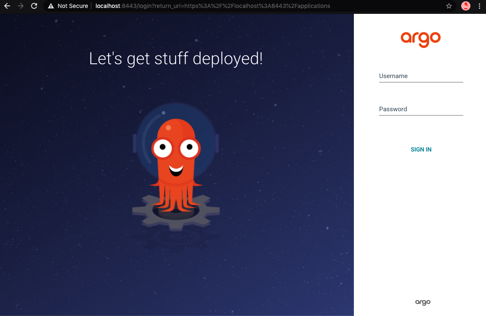
Nhập admin làm user ID và dùng mật khẩu bạn đã ghi lại trước đó để đăng nhập. Nếu đăng nhập thành công, bạn sẽ thấy một màn hình dashboard. Giờ chúng ta có thể chuyển sang việc tạo một tham chiếu tới deployment của dịch vụ thông tin chuyến bay.
Trong Argo CD, một microservice hoặc workload cần được triển khai được gọi là một application. Để triển khai microservice flight-information, chúng ta sẽ cần tạo một “application” mới và cấu hình nó bằng các giá trị tham chiếu đến package Helm trong Git repository mà chúng ta đã tạo trước đó.
Hãy bắt đầu bằng cách nhấp nút Create Application hoặc New App trên màn hình dashboard. Khi nhấp vào, một biểu mẫu web sẽ trượt ra từ phía bên phải màn hình và bạn sẽ cần điền thông tin vào đó. Đây là nơi bạn định nghĩa metadata cho application và vị trí của package Helm. Trong trường hợp của chúng ta, ta muốn Argo CD lấy package đó từ deployment monorepo và thư mục ms-flights bên trong nó.
Hãy dùng các giá trị trong Bảng 10-4 để thiết lập deployment cho microservice flight-information. Hãy chắc chắn bạn thay giá trị YOUR_DEPLOYMENTS_REPOSITORY_URL bằng URL của repository triển khai từ mục “Tạo Repository Triển khai Microservice” để Argo CD có thể truy cập các package Helm của bạn.
| Phần | Khóa | Giá trị |
|---|---|---|
GENERAL |
Application name |
|
GENERAL |
Project |
|
GENERAL |
Sync policy |
|
SOURCE |
Repository URL |
|
SOURCE |
Path |
|
DESTINATION |
Cluster |
|
DESTINATION |
Namespace |
|
Khi đã điền xong biểu mẫu, hãy nhấp nút Create.
Nếu bạn gặp rắc rối, hãy tham khảo tài liệu Argo CD để biết hướng dẫn cách thiết lập một application.
Nếu bạn đã tạo application thành công, Argo CD sẽ liệt kê application flight-info trên dashboard, như minh họa trong Hình 10-14.
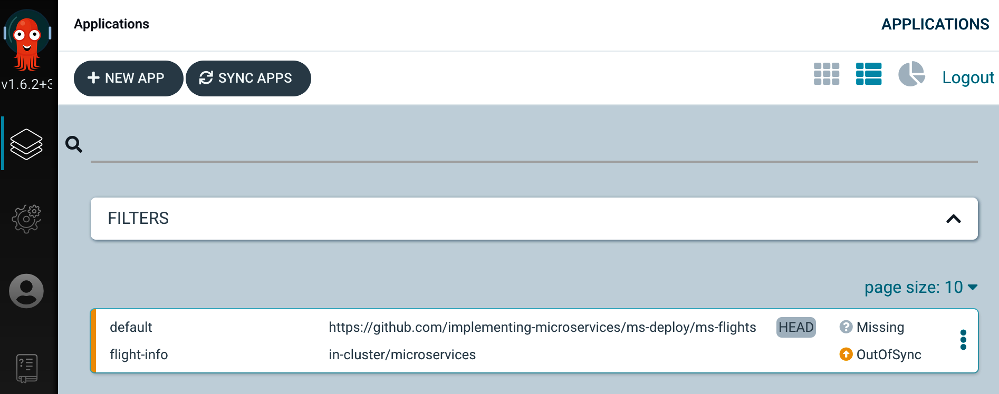
Tuy nhiên, mặc dù application đã được tạo, nó vẫn chưa được đồng bộ với khai báo Deployment, và application flight-info trong cụm của chúng ta chưa khớp với mô tả trong package. Đó là vì Argo CD vẫn chưa thực sự thực hiện Deployment. Để làm điều đó, hãy nhấp vào application flight-info mà chúng ta vừa tạo, nhấp nút Sync, rồi nhấp nút Synchronize trong cửa sổ trượt ra, như minh họa trong Hình 10-15.
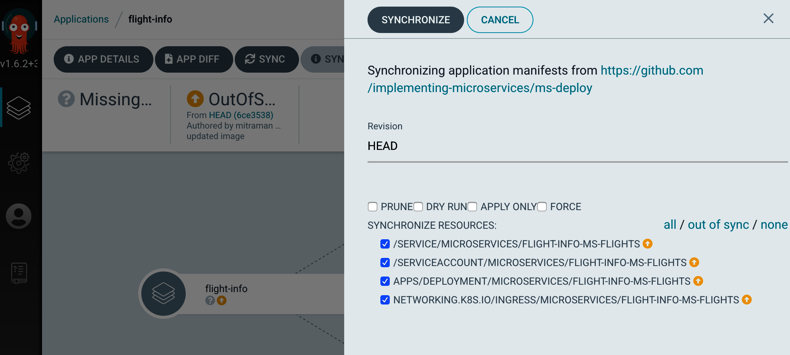
Khi bạn nhấp Synchronize, Argo CD sẽ thực hiện các công việc cần thiết để đưa application của bạn về đúng trạng thái đã mô tả trong package Helm. Nếu mọi thứ diễn ra suôn sẻ, bạn sẽ có một microservice khỏe mạnh, đã được đồng bộ và đã được triển khai, như minh họa trong Hình 10-16.
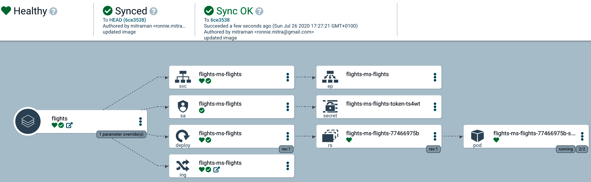
Nếu trạng thái triển khai của bạn không phải là “healthy,” hãy thử nhấp vào pod (nút cuối cùng ở ngoài cùng bên phải của cây). Bạn sẽ có thể xem các sự kiện và thông điệp log có thể giúp mình khắc phục sự cố.
Container của chúng ta đã được triển khai trong cụm Kubernetes, các kiểm tra health check và liveness check đã vượt qua, và nó đã sẵn sàng nhận request. Đây là một cột mốc rất lớn!
Bây giờ, hãy thử kiểm thử dịch vụ flights bằng một request đơn giản.
Microservice flights của chúng ta hiện đã hoạt động trong môi trường staging được lưu trữ trên AWS. Để kiểm thử service bằng một request, chúng ta sẽ cần truy cập load balancer của Traefik, nơi sẽ định tuyến request của chúng ta đến service chạy trong container. Điều đầu tiên chúng ta cần là địa chỉ mạng của load balancer. Vì chúng ta chưa thiết lập bản ghi DNS, AWS sẽ tự động cấp cho chúng ta một địa chỉ ngẫu nhiên. Để lấy địa chỉ đó, hãy chạy lệnh kubectl sau:
$ kubectl get svc ms-traefik-ingress
Bạn sẽ nhận được một kết quả trông như sau:
NAME TYPE CLUSTER-IP EXTERNAL-IP ms-traefik-ingress LoadBalancer 172.20.149.191 ab.elb.amazonaws.com
EXTERNAL-IP là địa chỉ của load balancer Traefik. Hãy ghi lại nó cho request kiểm thử của chúng ta.
Chúng ta sẽ dùng curl để gửi một request đến microservice flights. Nếu bạn chưa có bản cài curl trên máy, bạn có thể lấy nó từ trang này. Nếu bạn chưa từng dùng trước đây, curl là một công cụ dòng lệnh mạnh mẽ để gửi message tới các địa chỉ dựa trên URL. Chúng ta dùng curl vì nó có nhiều tùy chọn hữu ích, bao gồm khả năng đặt host header trong HTTP request. Điều đó rất hữu ích với chúng ta vì cần đặt host là flightsvc.com để quy tắc định tuyến ingress hoạt động.
Hãy chạy lệnh curl sau để gửi một request kiểm thử tới dịch vụ flights (thay {TRAEFIK-EXTERNAL-IP} bằng địa chỉ của load balancer):
curl --header "Host: flightsvc.com" \
{TRAEFIK-EXTERNAL-IP}/flights?flight_no=AA2532
Nếu mọi thứ diễn ra đúng như mong đợi, bạn sẽ nhận được thông tin chi tiết của chuyến bay đó dưới dạng phản hồi JSON.
Bạn có thể dùng một công cụ kiểm thử API chuyên dụng như Postman hoặc SoapUI để nhận được phiên bản phản hồi được định dạng thân thiện hơn với người dùng.
HTTP request mà chúng ta vừa gửi sẽ gọi tới ingress service, rồi từ đó được định tuyến đến microservice flights dựa trên quy tắc ingress mà chúng ta đã định nghĩa trước đó trong chương này. Microservice flights lấy dữ liệu từ dịch vụ cơ sở dữ liệu mà chúng ta đã cấp phát và trả kết quả cho chúng ta thông qua load balancer. Với request đó, chúng ta đã có thể kết nối tất cả các phần trong kiến trúc triển khai của mình và kiểm thử một kiến trúc microservice đầu-cuối!
Việc còn lại chỉ là dọn dẹp, để chúng ta không phải trả tiền cho những tài nguyên AWS không sử dụng.
Như những lần trước, chúng ta sẽ dùng Terraform client cục bộ để hạ hạ tầng xuống. Hãy chắc chắn rằng bạn đang ở trong thư mục chứa các tệp Terraform staging và chạy lệnh sau:
infra-staging-env $ terraform destroy
Khi lệnh hoàn tất thành công, môi trường staging dựa trên Kubernetes của chúng ta sẽ bị hủy. Bạn có thể kiểm tra để chắc chắn rằng các tài nguyên đã được xóa bằng AWS CLI hoặc bảng điều khiển AWS trên trình duyệt. Chúng tôi đã đưa ra một vài ví dụ về các lệnh CLI mà bạn có thể chạy trong Chương 6.
Ngay từ đầu chương, chúng tôi đã cảnh báo rằng chúng ta sẽ phải làm khá nhiều việc. Tất cả công sức đó đã được đền đáp khi cuối cùng chúng ta hoàn thành việc triển khai đầu-cuối cho kiến trúc microservice mà mình đã xây dựng xuyên suốt cuốn sách. Chúng ta cũng có cơ hội tái sử dụng một số công cụ và thực hành đã thiết lập trước đó để hoàn thành được nhiều việc hơn trong ít thời gian hơn.
Trong chương này, chúng ta đã cập nhật template hạ tầng để hỗ trợ các phụ thuộc đến từ các nhóm microservice. Chúng ta đã triển khai một pipeline build và tích hợp trong các repository mã nguồn microservice, đồng thời xây dựng một repository triển khai mới và một quy trình dựa trên công cụ để đưa service vào triển khai.
Hy vọng rằng bạn đã thấy được cách những quyết định mà chúng ta đưa ra ở thời điểm triển khai chịu ảnh hưởng mạnh mẽ từ các quyết định trước đó về nguyên tắc, mô hình vận hành, hạ tầng và thiết kế. Tất cả chúng đã kết hợp với nhau để tạo thành một trạng thái cuối cho phép chúng ta xây dựng một hiện thực chạy được.
Nhưng phép thử thực sự của một hệ thống microservice là cách nó xử lý thay đổi. Đó là điều chúng ta sẽ đề cập trong chương tiếp theo.